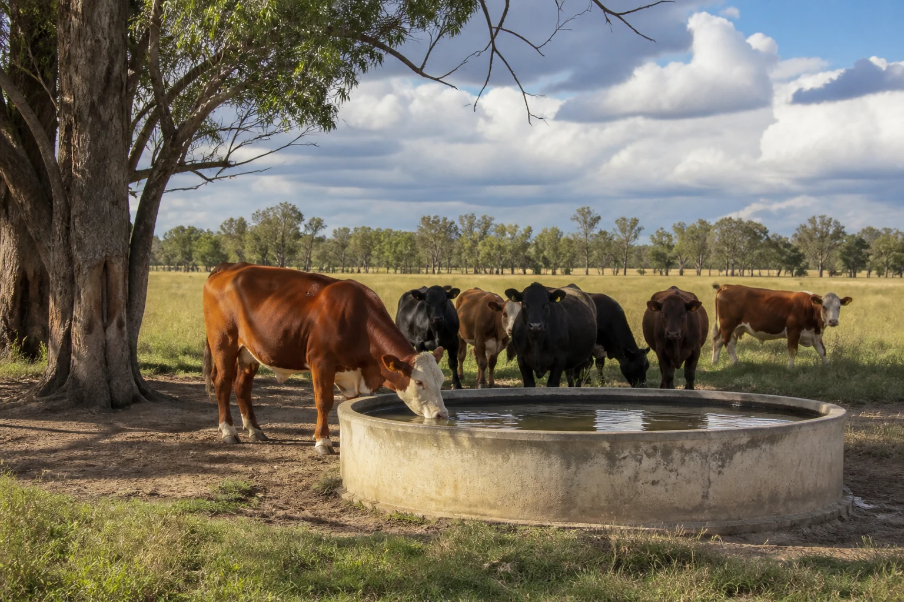

Learning purpose
Connect life stage, production context, condition and environment to the information a feeding plan needs.
Task 7 · Lesson 1 of 4
Connect life stage, production context, condition and environment to the information a feeding plan needs.
Learning purpose
Connect life stage, production context, condition and environment to the information a feeding plan needs.
Success criteria
Learning boundary
Supplementary learning and formative practice only. Current RTO assessment, local procedures and authorised supervision control real work.

AHCLSK229 requires feed and feed supplements to be prepared and provided according to a feeding plan. The plan translates current livestock, enterprise and professional information into instructions for the actual group and conditions.
A learner reads and follows the approved plan within supervision. This website can explain the information categories that support a plan, but it cannot create a ration or decide a real feeding requirement.
A feeding record needs the correct animal or group identifier, life-stage or production context used by the enterprise, date and current plan revision. These fields prevent information being applied to the wrong group.
When identifiers or plan details conflict, the learner should not select the most plausible entry. Mark the conflict and obtain confirmation from the authorised supervisor before the plan is used.
Condition evidence can include supervisor-approved scoring records, visible appearance, behaviour, movement and changes in eating or drinking patterns. The method and meaning come from current authorised sources.
Learners should not create a score from a photograph or make a nutrition diagnosis. They can compare existing authorised entries, describe visible change and report information that the plan reviewer may need.
Weather, water observations, work activity, housing or paddock conditions and feed access can affect the information reviewed before feeding. A change may mean the current plan needs authorised reconsideration.
The learner records the changed condition and checks whether the plan revision, group and date still match. Any adjustment to quantities, timing, feed type or supplements remains an authorised decision.
Fictional worked example
Plan evidence: At fictional Stringybark Farm, the approved classroom record for group L4 references Feeding Plan revision 3, but the workboard lists revision 2. The latest authorised condition sheet also contains a new environmental note. Decision and reason: Riley cannot choose a version or adjust any quantity because plan currency and the effect of the new information require authorised review. Safe action: Riley identifies the group, two revisions and dated condition note to the supervisor. Result: The supervisor confirms the current plan. Next check or record: Riley records the confirmed revision and leaves every feeding instruction unchanged.

AHCLSK229 includes checking water supply, quality and quantity against livestock requirements. Learners may observe and record current source fields, visible concerns or interruptions while staying within the approved task.
The website supplies no species water requirement or water-quality threshold. Current enterprise, laboratory, livestock and professional sources control suitability, monitoring expectations and any authorised workplace response.
Useful clarification questions identify the group, plan version, observation, missing field and decision needed. They avoid presenting a preferred ration or supplement as if it were approved advice.
Saved responses are fictional planning rehearsal. They do not replace the feeding plan, enterprise condition record, supervised practical work or evidence assessed through the RTO's current process.
Formative practice
Each option explains the consequence. These answers save only on this device.
Written application
Apply and keep a learning record
Using fictional teacher-provided records, match group identity, plan revision, condition entry and environment note. Flag any mismatch and write the question an authorised supervisor must answer. Do not design or alter a feeding plan.
Learning record: A supplementary source-matching audit that identifies reliable planning inputs and unresolved fields.
Lesson responses and the activity are formative learning only. Formal sufficiency and competence remain with the current RTO process.
Source basis: AHCLSK229 Release 1 preparation requirements for condition, health, feed, water and the approved feeding plan, supported by authorised livestock focus-area concepts. Current livestock expertise, enterprise plans and supervisor directions control every real requirement and adjustment.